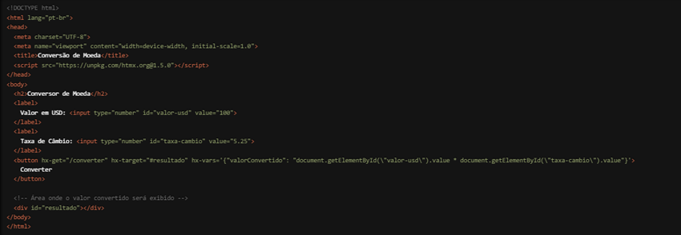

Estamos empolgados em apresentar uma funcionalidade sofisticada e poderosa do HTMX que oferece um controle detalhado sobre as variáveis usadas nas requisições HTTP: o atributo `hx-vars`. Com `hx-vars`, você pode definir variáveis dinâmicas que serão incluídas na requisição HTTP, proporcionando uma maior flexibilidade e personalização nas interações do usuário. Vamos explorar como essa funcionalidade pode elevar o nível das suas aplicações web.
O que é o atributo `hx-vars`?
O `hx-vars` é um atributo do HTMX que permite definir variáveis JavaScript diretamente no HTML,
as quais serão incluídas nas requisições HTTP. Isso pode ser extremamente útil quando você
precisa enviar dados dinâmicos que são calculados ou obtidos no momento da interação do usuário,
sem a necessidade de escrever código JavaScript adicional.
Como Funciona?
Vamos ver um exemplo prático para entender melhor como o `hx-vars` pode ser usado. Suponha
que você tenha um botão que precisa enviar variáveis dinâmicas com base em valores de campos
de entrada na página:

Neste exemplo, ao clicar no botão "Converter", a requisição HTTP GET é enviada para a URL "/converter". Graças ao atributo `hx-vars`, uma variável `valorConvertido` é definida dinamicamente com base nos valores dos campos de entrada `valor-usd` e `taxa-cambio`. A resposta do servidor é então usada para atualizar dinamicamente o `div` com id "resultado".